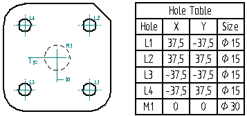
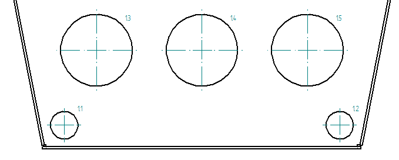
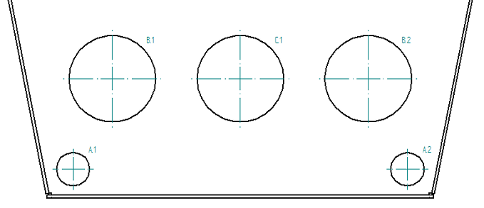
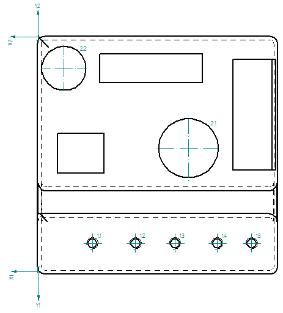
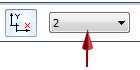

Hole tables
Hole tables are a useful means of identifying the size and location of holes in a part. A hole table works much like a software spreadsheet. Holes are represented as rows in the table and dimensions of the holes as columns. Hole tables support simple 2D geometry from circles and arcs, as well as 3D model features of holes, threaded holes, and patterns.
By default, the hole table command places a table with four columns: Hole, X, Y, and Size.

Creating hole tables
To create a hole table, use the Hole Table command  . You can select any individual holes, or you can create the hole table from all hole
features represented in a selected drawing view.
. You can select any individual holes, or you can create the hole table from all hole
features represented in a selected drawing view.
Using either method, the general procedure for creating the table is the following:
-
Choose the hole selection method.
-
Specify the X and Y origin coordinates for the hole table dimensions.
-
Select the drawing view or the holes to include.
-
Accept the hole selection.
-
Verify or edit the hole table columns and formatting in the Hole Table Properties dialog box.
-
Place the table.
Specifying the contents of the hole table
Before you place the hole table on the drawing sheet, you can use the Hole Table Properties dialog box to identify what you want to see in the table and how you want it to appear. Use the Columns tab to specify which of the columns you want to include in the table, edit the column headings, and add any custom columns and text. Use the Options tab to choose how you want to list the holes:
-
By hole size class
-
Per origin ID based on coordinates.
To learn about the content that you can add to the hole table, see Adding hole table columns.
Showing hole origin or hole size
The hole designation labels are shown in the Hole column in the table and in the hole annotations on the drawing. The default hole designation labels are based on their distance from the hole table origin coordinate. You can change the Hole column from showing origin number to showing hole size class using the controls at the top of the Options tab in the Hole Table Properties dialog box.
Use the List holes by origin option to label the holes numerically.
|
List holes by origin |
Example |
|---|---|
|
1.1 |
 |
|
1.2 |
|
|
1.3 |
|
|
1.4 |
|
|
1.5 |
Use the List holes by size option to show hole size class.
|
List holes by size |
Example |
|---|---|
|
A.1 |
 |
|
A.2 |
|
|
B.1 |
|
|
B.2 |
|
|
C.1 |
When you use the List holes by size option, you can add the Origin/Group column to the hole table. This automatically creates a hole table with the holes grouped by the diameters of the selected 2D geometry or hole features.
You also can change the alphanumeric designators used in the hole label names.
Change an alphanumeric label from 1.1 to 1-A.1.
To learn how to do this, see Change hole table labels.
Using different origins to identify hole location
Within the same hole table, you can define different XY origin coordinates on the same drawing view, and then show the locations of holes based on the different origins.
Use multiple origins when holes are irregularly spaced on the part. It is easier to show hole location from different corners.

|
Hole |
X |
Y |
Size |
Type |
|---|---|---|---|---|
|
1.1 |
29.69 mm |
12.57 mm |
4.98 mm |
Simple Threaded |
|
1.2 |
53.02 mm |
12.57 mm |
4.98 mm |
Simple Threaded |
|
1.3 |
74.35 mm |
12.57 mm |
4.98 mm |
Simple Threaded |
|
1.4 |
97.13 mm |
12.57 mm |
4.98 mm |
Simple Threaded |
|
1.5 |
115.76 mm |
12.57 mm |
4.98 mm |
Simple Threaded |
|
2.1 |
81.05 mm |
-58.48 |
24 mm |
Other |
|
2.2 |
13.72 mm |
-15.28 |
32.23 mm |
Other |
To use multiple origins, you select the holes and place the table for the first origin.
Then you select the table and click the Define Origin Step  a second time, before selecting the second set of holes that you want the table to
reference. The Origin Number List automatically increments on the command bar.
a second time, before selecting the second set of holes that you want the table to
reference. The Origin Number List automatically increments on the command bar.

To modify the holes in a hole table with multiple origins, select the hole table, and then select the origin number (1, 2, 3, or 4) from the list.
Adding and removing holes in the hole table
To add or remove holes from an existing table, select the Add or Remove Holes Step button  on the command bar, and then click the holes you want to add and Shift+click the
holes you want to remove. The table updates automatically when you click Accept.
on the command bar, and then click the holes you want to add and Shift+click the
holes you want to remove. The table updates automatically when you click Accept.
Defining the appearance of hole annotations
You can specify the default appearance of the hole annotations that are generated in the drawing view using the Options tab in the Hole Table Properties dialog box. These include the following:
-
Center marks and projection lines on the holes.
-
The location of the hole annotation with respect to the hole (top-right, top-left, bottom-right, and bottom-left).
-
The offset between the hole and the annotation.
-
Hole annotation leader line and break line.
Many of the annotation formatting options are illustrated in the following hole table callout.

Deleting and renumbering holes
You can determine how Solid Edge renumbers the rows in your hole table when you update it. You can choose to renumber holes, to keep previous numbers for deleted holes, or to leave blank lines for deleted holes. Use the Options tab of the Hole Table Properties dialog box to specify how the hole numbers (row numbers) are derived.
You can renumber the holes by changing the order of the rows using the Move Row Up and Move Row Down controls on the Hole Number page. To update the hole sequence numbers, you can use the Relabel List button.

Saving the hole table format
You can save a hole table format with a name you define, so you can easily use it again. Use the Saved settings options on the General tab in the Hole Table Properties dialog box to name, save, and reapply your hole table format.
A quick way to reapply the table formatting is to use the Saved settings list  on the command bar.
on the command bar.
Two saved settings are provided with Solid Edge by default: ANSI and ISO.
Modifying the format of a hole table
You also can change the formatting of a table after you place it on the sheet. For example, you can edit table cells directly to add boldface, italics, and underline to column headings. You can edit the text in a cell, for example to update a table title or subheading.
To learn how you can change the appearance of individual elements of a table—titles, columns, headers, and data cells—without changing the table style, see the following Help topics:
Formatting hole sizes in a hole table
When you open the Data tab for a hole table, the Format button is available on the toolbar to open the Format Values dialog box, where you can apply hole size round-off, unit, and tolerance formatting to one or more selected hole values.
You also can set this formatting using the Format Values command, which you can open from the context menu in direct edit mode,

For more information, see Editing a table directly.
Copying hole table contents
You can use the commands on the shortcut menu of a selected hole table to copy the contents of the table.
-
Use the Copy Contents command to copy the hole table contents as text. You can then select the Paste command to paste the text into another application, such as Excel or a Word document. This method does not retain the table structure.
-
Use the Convert To Table command on the table shortcut menu to convert a hole table to a user-defined table format. This retains the hole table contents and appearance (the table grid lines, column headings, table titles, and other display features of the original hole table), but it removes the associativity between the hole table and the source files used to create it.
How do I
Create a hole tableChange hole table labels
Define a smart hole table callout column
Hide the hole table origin
Show hole size tolerance
Learn more
Adding hole table columnsLook up more details
Hole Table commandHole Table command bar
Hole Table Properties dialog box
Options tab (Hole Table Properties dialog box)
Hole Number tab (Hole Table Properties dialog box)
Callout tab
Smart Depth tab
Units tab (Hole Table Properties dialog box)